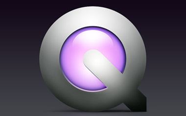
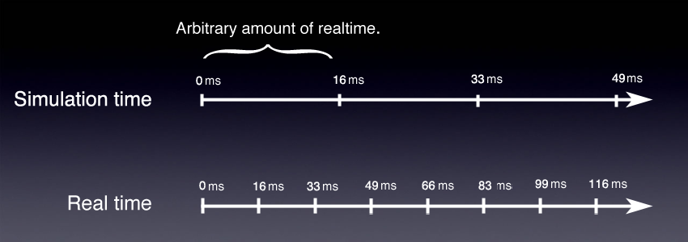
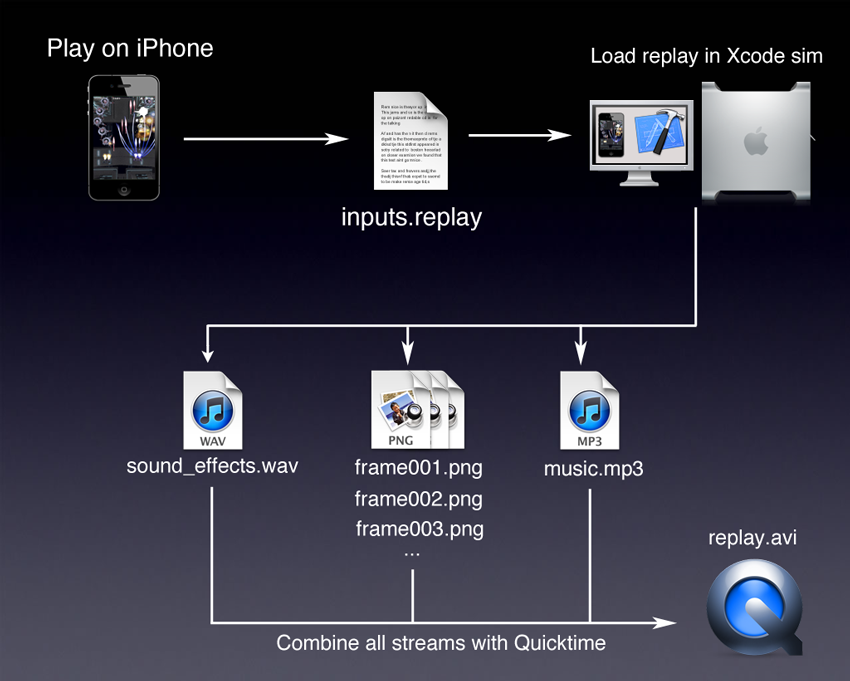

SHMUP postmortem: How to create 60 fps videos from iOS devices
 Back in winter 2009 I was working pretty hard on the 3D engine that would power my next iPhone/iPad game: "SHMUP". To demo the work in progress required to generate videos, a task far from being trivial on a smartphone: Slow CPU/GPU, Little RAM, no TV output, no storage space, no real multitasking. Hence I had the idea to have the engine generate its own videos. This is how I did it, maybe it will inspire someone.
The constraints
To record a game session on platform such as Windows, Linux or MacOS X is very easy: just use a Capture software. I have used Fraps and Snapz Pro X for acceptable results by the past. If really your engine is pushing the machine to it limits or you want a professional 60 frames per second video, you can use an other device that you plug on both the DVI output of the graphic card and the sound card output.
But on a mobiles device none of those are possible because of the following constraints:
- Very limited CPU/GPU power: An additional process, grabbing the framebuffer each frame would kill the framerate.
- Very limited storage space and memory, reduce the length and quality of a video you can generate.
- No real multitasking, you cannot run two applications at the same time and use one to capture video/sound from the other.
- No access to the framebuffer (at least with public frameworks), applications are isolated from each other.
- No TV output, no way to use an external device to record anything else but the sound and music. Note: There is actually a way to output video on the USB port via
MPTVOutWindowbut no way to get above 10 frames per seconds.
A solution
The main element of the solution is to centralize all user inputs and record them so they can be replayed in order to replicate a session precisely. This was originally a suggestion from John Carmack in a plan from Oct 14, 1998 (mirror).
With an appropriate structure, user inputs are timestamped as soon as they are received from the touchscreen or the network:
typedef struct
{
unsigned int time;
unsigned int delta_time;
unsigned char buttons_state;
} command_t ;
This is not the only thing to do in order to be able to replay a session accurately. You also have to make the game deterministic and deal with issues such as different framerate between recording and playing but this beyond the scope for now (Check out Doom and Quake source code to learn more about how to deal with this issue).
Once a game session is recorded it can be replayed anywhere at any speed. It can be loaded in XCode's iphone simulator, running on your desktop where a lot of storage space is available. Additionally the timer can behave differently upon video generation and return a constant 16.666ms delta in order to dissociate realtime and simulation time. The overall allowing to spend as much time are needed between frames:

The overall method is summarized as follow:
- Play the game, record the inputs.
- Load the inputs in XCode simulator.
- Start the engine in playback mode, the timer now returns a fixed simulation time delta of 16,666ms for each frame tick.
- At the end of each frame, take as much time needed in order to save to HD:
- A PNG file: The current OpenGL framebuffer
- A PCM frame of the WAV file representing she sounds played by OpenAL during the last 16,666ms
- At the end of the session, combine all streams (video, audio track, sound effects) using Quicktime.
Full pipeline

Save a video/OpenGL frame
Visual frames are saved as TGA files. There is one file per frame. To save a visual frame is very easy, we just have to request it from openGL via glReadPixels, flip the channels R and B (btw I just learned about the xor trick!) and save to the hard-drive.
uchar* screenShotBuffer;
void dEngine_INIT_ScreenshotBuffer(void)
{
screenShotBuffer = calloc(SCREEN_WIDTH* SCREEN_HEIGHT, 4);
}
void dEngine_WriteScreenshot(char* screenshotPath)
{
//This is where we request OpenGL to send the current framebuffer
glReadPixels(0,0,SCREEN_WIDTH,SCREEN_HEIGHT,GL_RGBA,GL_UNSIGNED_BYTE, screenShotBuffer);
// OpenGL returns byte in RGBA order but TGA needs BGRA order
// Next loop flips R and B components using XOR trick instead of a tmp variable
uchar* pixel = screenShotBuffer;
for(int i=0 ; i < SCREEN_WIDTH * SCREEN_HEIGHT ; i++)
{
pixel[0] ^= pixel[2];
pixel[2] ^= pixel[0];
pixel[0] ^= pixel[2];
pixel += 4;
}
// Filling TGA header information
uchar tga_header[18];
memset(tga_header, 0, 18);
tga_header[2] = 2;
tga_header[12] = (SCREEN_WIDTH & 0x00FF);
tga_header[13] = (SCREEN_WIDTH & 0xFF00) / 256;
tga_header[14] = (SCREEN_HEIGHT & 0x00FF) ;
tga_header[15] =(SCREEN_HEIGHT & 0xFF00) / 256;
tga_header[16] = 32 ;
// Open the file, write both header and payload, close, done.
FILE* pScreenshot = fopen(screenshotPath, "wb");
fwrite(&tga_header, 18, sizeof(uchar), pScreenshot);
fwrite(screenShotBuffer, SCREEN_WIDTH * SCREEN_HEIGHT,4 * sizeof(uchar),pScreenshot);
fclose(pScreenshot);
}
Save an audio frame
Sound effects are saved as one replay long WAV PCM file. To save an audio frame is a bit harder because we have to reconstruct what was played by the speakers during the 16,666ms duration of the frame. To add complexity the engine plays sounds on several channels simultaneously, we need to mix them the way OpenAL did. The trick is to keep track of what has been sent to OpenAL for each channel.
typedef struct
{
uchar* data;
ALenum format;
[...]
int duration;
int lastTimePlayed ;
} sound_t;
typedef struct openAL_channel_t
{
[...]
sound_t* lastSoundPlayed;
} openAL_channel_t ;
Every frame we write the PCM values resulting in the combination of all the channels currently playing a sound effect (All channels can be mixed into a single one by calculating the average PCM value of all channels).
int WAV_SAMPLE_RATE = 22500 ; //samples/seconds
int numSamplesToWrite = 16,666 / 1000 * WAV_SAMPLE_RATE;
uchar* wavDataBuffer ; //An allocated buffer storing the WAV data payload
for(int i=0 ; i < numSamplesToWrite ; i++)
{
int averagePCMValue = getAllChannelsAverage();
*wavDataBuffer++ = averagePCMValue;
}
When the session is over we save the WAV PCM file to the HD. Here are the data structures we need:
#define WAVE_FORMAT_PCM 0x0001
#define WAVE_FORMAT_IEEE_FLOAT 0x0003
#define WAVE_FORMAT_ALAW 0x0006
#define WAVE_FORMAT_MULAW 0x0007
#define WAVE_FORMAT_EXTENSIBLE 0xFFFE
typedef struct master_riff_chnk_t
{
char ckID[4];
unsigned int cksize;
char WAVEID[4];
} master_riff_chnk_t;
typedef struct fmt_chunk_t
{
char ckID[4];
unsigned int cksize;
unsigned short wFormatTag; // 2 WAVE_FORMAT_PCM
unsigned short nChannels; // 2 Nc
unsigned int nSamplesPerSec; // 4 F
unsigned int nAvgBytesPerSec; // 4 F * M * Nc
unsigned short nBlockAlign; // 2 M * Nc
unsigned short wBitsPerSample; // 2 rounds up to 8 * M
} fmt_chunk_t;
typedef struct basic_chunk_t
{
char ckID[4];
unsigned int cksize;
} basic_chunk_t;
typedef struct wave_file_t
{
master_riff_chnk_t riff;
fmt_chunk_t fmt;
basic_chunk_t dataChunk;
} wave_file_t ;
At the end of the replay we save the buffer as a WAVE as follow:
void SND_SaveWAV(char* path, char* audioTrack, int sizeAudioTrack)
{
wave_file_t waveFile;
memset(&waveFile,0,sizeof(waveFile));
//Value explanation 4(dataChunk header) + 24(fmt header) + 8 (riff header) + data payload
waveFile.riff.cksize = 4 + 24 + (8 + sizeAudioTrack);
memcpy(waveFile.riff.ckID,"RIFF",4);
memcpy(waveFile.riff.WAVEID,"WAVE",4);
waveFile.dataChunk.cksize = sizeAudioTrack;
memcpy(waveFile.dataChunk.ckID,"data",4);
memcpy(waveFile.fmt.ckID,"fmt ",4);
waveFile.fmt.cksize = 16;
waveFile.fmt.wFormatTag = WAVE_FORMAT_PCM;
waveFile.fmt.nChannels = 1;
waveFile.fmt.nSamplesPerSec = 22050;
waveFile.fmt.wBitsPerSample = 8;
waveFile.fmt.nBlockAlign = waveFile.fmt.wBitsPerSample/8 * waveFile.fmt.nChannels;
waveFile.fmt.nAvgBytesPerSec = waveFile.fmt.nSamplesPerSec * waveFile.fmt.wBitsPerSample/8 * waveFile.fmt.nChannels;
//Write file on disk
FILE* f = fopen(path, "wb");
fwrite(&waveFile, 1, sizeof(wave_file_t), f);
fwrite(audioTrack, 1, sizeAudioTrack, f);
fclose(f);
}
This is for a 22500Hz, mono, 8bits WAV but it can easily be converted to any combination of Stereo/16bits/Frequency.
Result
In the end you get a 60 fps video with soundtrack and music.